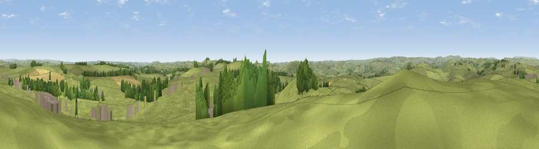

Lean Low
#16969 in England · top 22% of its area beats it · near Parsley HayThe view, rendered

A 360° render of this exact spot computed from the terrain model, tree cover and land cover — summer colours, afternoon light, calibrated against photographs of famous viewpoints. Real trees, hedges and buildings will differ in detail.
The panorama
Grey silhouette: terrain skyline in each direction (720 bearings, Earth curvature and refraction included). Dashed green: skyline with trees (+15 m) and buildings (+8 m) as obstacles. Blue strip: how far the ground is visible on each bearing.
Where the view opens
Wedge length = distance to the farthest visible ground on that bearing (vegetation-aware). Rings at 10, 25 and 50 km.
What fills the view
83% grassland · 8% woodland · 7% cropland · 2% built-up
Angular shares of the visible panorama (visual magnitude), not map area. Landscape diversity 0.27 (0–1 Shannon).
Key numbers
More beautiful places nearby
The staircase of upgrades: each row has a higher view potential than everything closer. Driving times are estimates from straight-line distance, calibrated against real road routing — check an actual route before setting out.
| Place | Direction | Drive | Score |
|---|---|---|---|
| Viewpoint near Heathcote | SSE · 2 km | ~5 min | 57.2 |
| Viewpoint near Biggin | SE · 4 km | ~9 min | 61.5 |
| Viewpoint near Biggin | SSW · 4 km | ~9 min | 65.6 |
| Viewpoint near Earl Sterndale | NW · 8 km | ~16 min | 66.3 |
| Tissington Hill | S · 10 km | ~19 min | 75.5 |
| Viewpoint near Mow Cop | W · 29 km | ~46 min | 78.9 |
| Viewpoint near Mow Cop | W · 30 km | ~46 min | 80.2 |
| Viewpoint near Harthill | W · 64 km | ~87 min | 80.5 |
53.15695, -1.77751 · source: osm peak · position refined by local search. Computed location — check access rights before visiting.